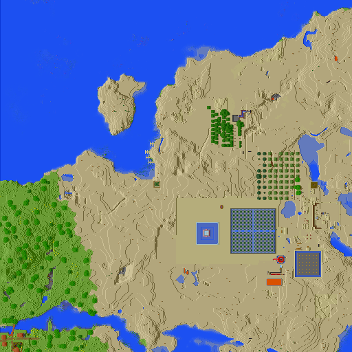

基础信息
巴库工业区是服内最老的工业区，同时也是服内唯一一个位于沙漠群系的地区。
该地区主要位于X轴2275到2000和Z轴-805至-644的矩形范围内。
目前该地区人口为0人，管理者为NEX CONTINUUM
该地区游戏内旗帜为黄色双头鹰镌刻于红色的旗帜之上。
设施
目前该地区设施如下图所示：
史莱姆农场，仙人掌骨粉农场，刷石机，快速熔炉，刷铁机分布在远离海洋的地方。
而沿海的大量平地，由于人口不足，处于未开发状态。
历史沿袭
该地区历史由于时间久远，已不可考。
未来规划
开发沿海平地，继续工业化，建设沙漠特有风格的建筑。
对于新人，不主动参与招新，但新人可选择定居。